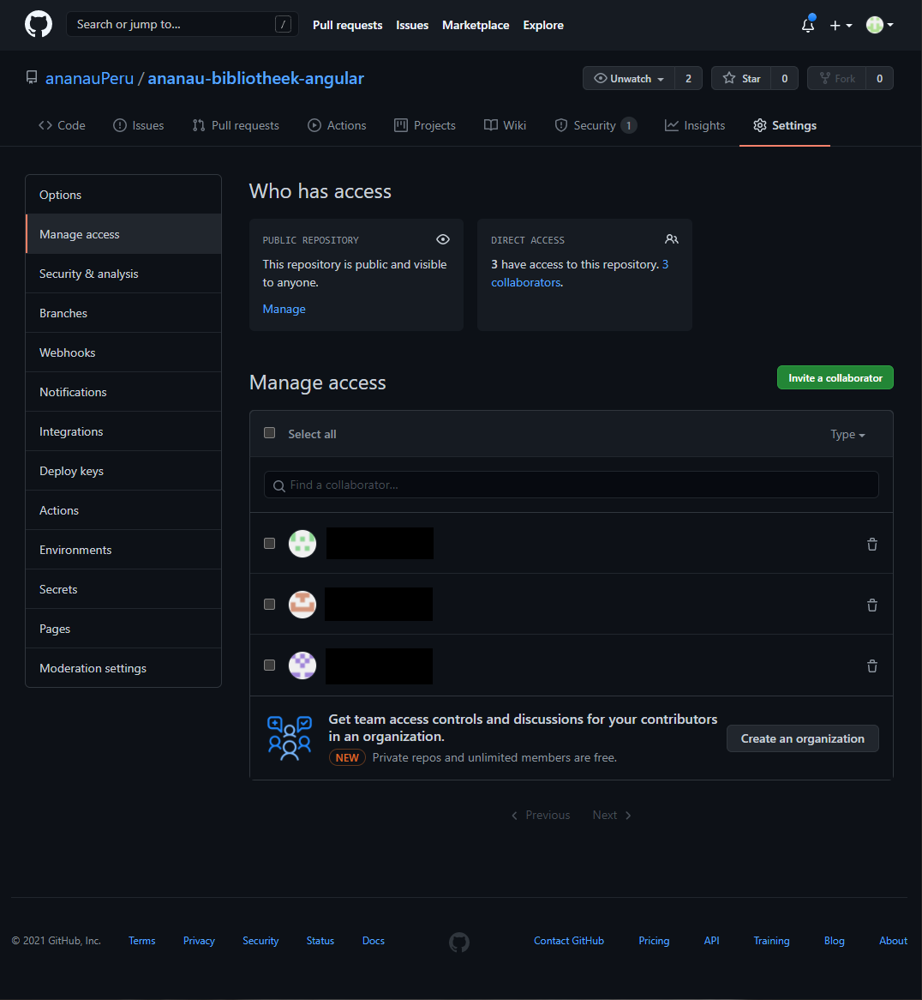

In order to begin working for Añañau and all of her projects we need access, lets sort that out first!
We need access to multiple resources in order to start developing. Managing logins and passwords in a correct and secure manner is very important. So it would be a bad idea to simply list them all here. We are using a key vault on Azure to store all of our credentials. Below is a step by step instruction to access the vault and username/password combinations.
Step 1 - Log in to Azure
Log in to Azure and open the Añañau Resource Group named ananauAPI. If you don't have access to the Azure portal yet please contact Ellen Bosh or Gilmourd Cardeña Pérez. They can give you access to the portal, step-by-step instructions can be found below.
Cannot see Añañau resources?
First, make sure one of the admins (Ellen or Gilmourd) has given you access to the resource group. If you're sure you have access but still cannot see the Añañau resource group, it may be because you need to switch directories. It is very simple, click on your profile picture located top-right of the screen and then click on the button Switch Directory. You'll see a list of all the resources you have access to. Select Asociación ONG Añañau.
Step 2 - Give your personal Github account access to the ananauPeru repo.
Log in to Github with the IT email address of Añañau; it@ananau.org. The password for this account can be found in the Azure Vault; navigate to Azure Añañau > ananau-master-vault > Secrets > github-it-ananau.
For each repository (there are currently two active; ananau-bibliotheek-angular and ananau-api-2024) go to Settings > Manage access to add your personal (or school) Github account to the collaborators. Also, if there are still accounts from previous students who don't need access anymore (if you are sure), feel free to remove them.
Step 3 - Finishing
Now login to your personal Github account and make sure you have access to the repositories. Congrats! You now have access to all resources you need to start developing some really good stuff for Añañau!
Don't forget, if you ever need access to a resource but don't know the username/password, the first place to check is the Azure Vault. If it isn't listed there, contact Ellen or Gilmourd.
Giving Access to New Users
In the past everyone logged in from the same master account with all the permissions for the Azure portal. This is not the best solution for obvious reasons. We've switched to using Azure role-based access control (Azure RBAC), the official documentation can be found here.
Step 1 - Log in to Azure
Log in to Azure with the owner account ellen@quebonito.onmicrosoft.com. You will be presented with an overview like below, please select the resource group named ananauAPI.

Step 2 - Navigate to Access Control (IAM)
Click on Access Control (IAM) which is located on the left navigation panel.

Step 3 - Navigate to Role Assignments Tab
Click on Role Assignments (3) which is located on the top navigation bar within the IAM control panel. Next click on + Add (4) and select Add role assignment from the dropdown to assign a new role to a user.

Step 4 - Add Role & User
A side-panel will show up where you need to fill in the following information and click on Save.
- Role: Añañau-Intern (very important to select the correct role, make sure you select 'Añañau-Intern')
- Assign access to: User, group, or service principal
- Select: example@email.com
The user has been granted access to the resource group.